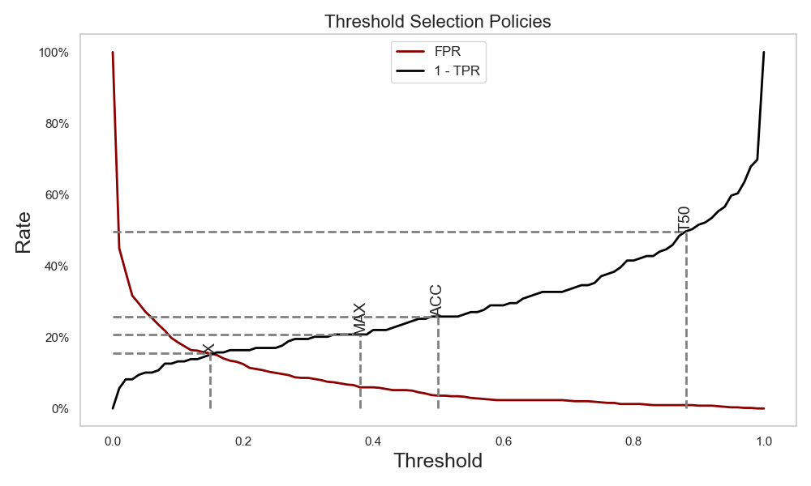

Adjusted Counting#
Adjusted Counting methods improve upon simple “counting” quantifiers by correcting bias using what is known about the classifier’s errors on the training set. They aim to produce better estimates of class prevalence (how frequent each class is in a dataset) even when training and test distributions differ.
see Counting-Based Quantifiers for an overview of the base counters for quantification.
This page focuses on threshold adjustment methods, which adjust the decision threshold of a classifier to optimize prevalence estimation. Examples include Adjusted Count (TAC) and its threshold selection policies (TX, TMAX, T50, MS, MS2).
Threshold Adjustment#
Threshold-based adjustment methods correct the bias of CC by using the classifier’s True Positive Rate (TPR) and False Positive Rate (FPR).
They are mainly used for binary quantification tasks.
Threshold Adjusted Count (TAC) Equation
- caption:
Corrected prevalence estimate using classifier error rates
The main idea is that by adjusting the observed rate of positive predictions, we can better approximate the real class distribution.
{kind=link}

Comparison of different threshold selection policies showing FPR and 1-TPR curves with optimal thresholds for each method [Adapted from Forman (2008)]#
Different threshold methods vary in how they choose the classifier cutoff \(\tau\) for scores \(s(x)\) .
All these methods have their fit, predict and aggregate functions, similar to other aggregative quantifiers. However, they also include a specialized method: get_best_thresholds, which identifies the optimal threshold, given y and predicted probabilities. Here is an example of how to use the T50 method:
from mlquantify.counting import T50, evaluate_thresholds
from sklearn.linear_model import LogisticRegression
clf = LogisticRegression()
thresholds, tprs, fprs = evaluate_thresholds(
y=y_test,
probabilities=clf.predict_proba(X_test)[:, 1]) # binary proba
q = T50()
best_thr, best_tpr, best_fpr = q.get_best_thresholds(X_val, y_val)
print(f"Best threshold: {best_thr}, TPR: {best_tpr}, FPR: {best_fpr}")
Note
Threshold adjustment methods like TAC are primarily designed for binary classification tasks.